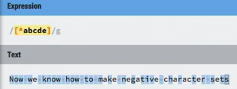
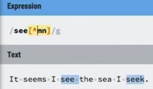
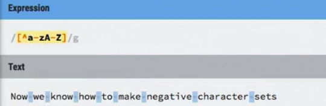

Negative character set character ^
the ^ (caret) negates a character set
it means what follows the ^ is not a character within the character set
/[^aeiou]/ matches any one consonant(not a vowell)
/see[^mn]/ matches "seek" and "sees" but not "seem" or "seen"
examples
common mistake
/see[^mn] would not match "see"
because a negative character set is still looking for a character
but it would match "see." and "see " with a space
the negative character is a great to match and remove spaces
